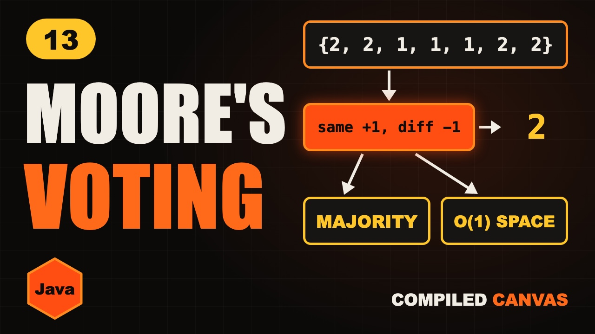

Moore's Voting Algorithm in Java | Majority Element

The video goes live on 9 Nov 2026 at 6:00 PM IST. The notes are ready now.
?What this episode covers
A majority element appears more than half the time. A hash map finds it in O(n) time but uses O(n) memory, and sorting costs O(n log n). Moore's voting algorithm needs one number and one counter.
Think of a battle where each soldier knocks out one soldier from another team, and both leave. The majority team has more soldiers than everyone else combined, so someone from it is still standing. In code, a same vote adds one, a different vote takes one away, and at zero the next number becomes the candidate.
We walk through a full example, write it in Java, and cover the trap: it only works when a majority is promised. Without that promise you need a second pass to verify. We finish with the harder version, more than one third of the time.
◎What you'll be able to do
- What majority means
- Two simple ways
- Cancelling votes
- The Java code
- The check people forget
!The mistake to watch for
It only works if a majority is promised. If it isn't, do a second pass to count the candidate. Try 1, 2, 3 and see.
✦Key moments tap one to jump there
↗Full transcript
Read the whole lesson
Seven people vote. Two candidates. Here are the votes.
One candidate has more than half the votes. Who is it?
Easy, you say, just count them with a hash map. But what if you're told to use no extra memory at all?
One number and one counter are enough. It's called Moore's voting algorithm, and it feels like magic until you see why it works.
Welcome back to Compiled Canvas. This is Episode Thirteen of our DSA series. Last time, we sorted zeros, ones and twos with the Dutch National Flag.
Here's the plan. First, what a majority element is. Then the two simple ways. Then the idea of cancelling votes. The Java code. And the one check people forget. A cheat sheet. And an easy quiz at the end.
Let's go.
A majority element appears more than half the time. Not half. More than half.
In seven numbers, it must appear at least four times. In ten numbers, at least six.
There can never be two of them. Two numbers can't both take more than half.
Way one, use a hash map. Count every number, and return the one above half.
It's O of n time, but the memory grows with the input.
Way two, sort the numbers. The middle one must be the majority, because it covers more than half.
It uses no map, but sorting costs O of n log n, and it changes the array. We can beat both of these.
Here's the idea, and it's lovely. Imagine a battle. Each soldier can knock out one soldier from another team, and both leave the field.
The majority team has more soldiers than all the other teams put together.
So when everyone has cancelled out, someone from the majority team is still standing.
That's all the algorithm does. We keep one candidate and a count. A same vote adds one. A different vote cancels one.
Let's walk it. The count is zero, so the first two becomes our candidate. Count is one.
Another two. Same vote, so the count is two.
A one. Different vote, so one soldier from each side leaves. Count is one.
Another one. Different again. The count is zero.
The next one. The count is zero, so one becomes the new candidate. Count is one.
A two. Different, so the count is zero.
The last two. The count is zero, so two is the candidate again. Count is one.
We're done. The candidate is two, and two is the answer.
Here's the Java code. Just two variables, a candidate and a count.
If the count is zero, the current number becomes the new candidate.
Then, a same vote adds one, and a different vote takes one away.
At the end, the candidate is the answer. It's O of n time, and O of one space.
Quick pause, before we go further. If you're finding this video valuable, hit subscribe to Compiled Canvas, and turn on the bell. It's free, it takes one second, and it helps me keep making this complete DSA series for you. Alright, back to it.
Your turn. Pause, and run it on three, three, four, two, three, three, one.
The count goes one, two, one, zero. Then three comes back: one, two, one. The candidate is three, and three is the majority.
Now the trap. Moore's only works if a majority is guaranteed. LeetCode one sixty nine promises this. Many interviewers don't.
Try one, two, three. Nobody has a majority. But the algorithm still returns three.
So, if there's no promise, do a second pass. Count how many times the candidate really appears.
If it's more than half, it's the answer. If not, there's no majority.
Two passes, and it's still O of n time and O of one space.
Here's a follow-up that companies ask. Find every number that appears more than one third of the time.
At most two numbers can do that. So keep two candidates and two counters.
A different vote now cancels one from both. And you always verify at the end.
So, here's the whole thing in one cheat sheet. Pause and screenshot this.
Majority means more than half.
Keep a candidate and a count.
When the count is zero, take a new candidate.
A same vote adds one.
A different vote takes one away.
Verify if there's no promise.
It's O of n time and O of one space.
Okay, quiz time. Three easy questions. Pause the video, think, and then hit play.
Question one. In ten numbers, how many times must the majority appear, at least?
Question two. The count is zero and the next number is five. What happens?
Question three. What does the algorithm return for one, two, three, without a check?
Ready?
Question one: Six. It must be more than half.
Question two: Five becomes the candidate.
Question three: Three, which is wrong. So we verify.
How many did you get right? Tell me in the comments: three out of three, two, or one.
Let's recap. Majority means more than half. Different votes cancel each other out. The majority always survives. One candidate, one count, one pass. If there's no promise, verify with a second pass.
Your homework. Solve LeetCode one sixty nine, majority element. Then try two twenty nine, the one third version. And then write the verify step yourself, and test it on one, two, three. Hints and Java answers are on compiled canvas dot com.
Next episode, we move to two dimensions. Rotate a matrix, walk it in a spiral, and search it fast.
And don't forget to subscribe to Compiled Canvas, so you don't miss anything new in tech and the job market. Keep coding, stay consistent, and I'll see you in the next one.